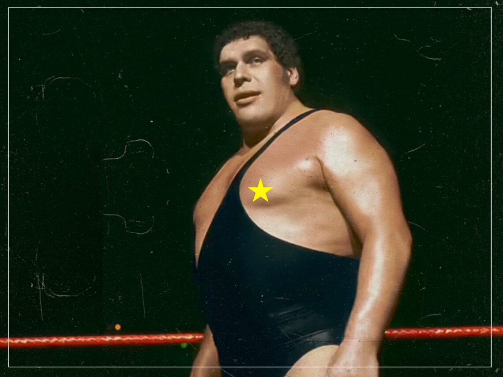

Star ratings are a bad way to compare products (2)
Stars are not kilograms
This is the second in a series about star ratings/online reviews. I plan to mainly talk about my own research. But who knows.
The kilogram is a useful measure of mass. The kilogram is widely used because it is objectively defined. One kilogram is equal to the weight of one liter of liquid water—so a bathroom scale tells users how much liquid water they equate to. Beyond providing a good ice breaker for dinner parties, this also makes the kilogram easy to interpret and compare; the kilogram helps people to compare objects to important benchmarks (e.g., “Is this truck too heavy to cross this bridge?”), and to other objects (e.g., “Which truck should I take to cross this rickety bridge?”). It is a good thing that the kilogram is widely used—the kilogram is a good measure.
Star ratings are similar to the kilogram in one sense, but very different in another. Ratings are also widely used. Almost anywhere we shop online, we find some form of ratings. However, star ratings are absolutely not objectively defined. There is no equivalent to the liter of water that defines what each star in a rating represents, and not even guidance as to what ratings should measure. As a result, ratings are open to being swayed by context. In my last post, I wrote about one example of mental context—expectations; influenced by Airbnb Superhost certifications—and its effect on ratings. In this post, I’ll write about this in a more general sense, explaining why (I think) context influences our evaluations.1
Evaluations with bad scales
What would the world look like without standardized measurements?
Imagine that we did not have any standardized measure of weight. Instead, we could only say that things were (i) “very light”, (ii) “light”, (iii) “neither light nor heavy”, (iv) “heavy”, or (v) “very heavy”.
In this world, how heavy would you say that André the Giant is?

Now, how heavy would you say this elephant is?2

Were they both “very heavy”?
Now, how about a this 2012 Mini Coupe?3
I am guessing that your ratings are a mess.
André the Giant? Clearly, a giant. It’s right there in the title. So he is “very heavy”.
The elephant? An elephant. Famously “very heavy”. But heavier than André the Giant for sure, so it probably doesn’t feel great to not be able to distinguish them.
The Mini Coupe is where this exercise really falls apart. It is a smaller version of a small vehicle. Calling it “very heavy” seems wrong, but it is also much heavier than André the Giant.
There is no perfect way to judge the heaviness of these three things, based purely on the scale and instructions I provided. If the scale was objective (like a kilogram), this would obviously be easy. It would also be relatively easier if I clearly explained how you should judge heaviness—for example, if I said “Judge the heaviness of these three things, in relation to eachother,” or “Judge the heaviness of these three things, in relation to the category they come from.”
Without clear instructions for how to judge the heaviness of these three things, we use whatever reference points come to mind. André the Giant was called such because he was extremely large, compared to other humans. This is a natural point of comparison for humans—other humans. Meanwhile, elephants are seen as large compared to other animals, because that is a natural comparison. Finally, the entire Mini car branding only makes sense in comparison to other cars.
Obviously however, this falls apart when we consider these judgments across things in different categories. These judgments only make sense when we know the comparisons they resulted from. But, even if we knew these comparisons, the scale (i.e., “very light” to “very heavy”) still lets us down; if all you know is that André the Giant is a very heavy human, and an elephant is a very heavy animal, you still have no idea how many André the Giants it would take to balance the weight of an elephant.
I thought this was about star ratings?
In my last post, I wrote about how Airbnb listings that are certified as Superhosts receive lower ratings than they would if they were not Superhosts. I said that this was because people don’t make the same comparisons when they evaluate Superhosts and regular hosts on Airbnb—they expect more from Superhosts. That was a specific example of a general problem.
When we evaluate anything online, we are not told how to make this evaluation. For example, here is the most recent review solicitation email I have received:
That’s all the instruction I received. No benchmarks and no guidance for things to consider or compare my experience to (e.g., “Was the shipping time faster or shorter than Barnes and Noble?”). And this type of solicitation is the industry standard—you won’t find better most places.
This means we—as reviewers—have to decide for ourselves what a 1-, 2-, 3-, 4-, or 5-star experience is, for everything we review. There is nothing keeping us consistent to ourselves over time (if I am grumpy about work, I may write more negative reviews for socks), across experiences (I may be more harsh to Superhosts than regular Airbnbs), or across people (Nick Reinholtz is a ray of sunshine, while I am an under-bridge troll).
This problem is most serious in a case like Superhost status—when something that differs between alternatives also affects ratings. For an even clearer example, consider an experiment that Nick and I ran a few years ago. This experiment was previously in a working paper alongside the Airbnb data, but is now in its own manuscript, under review at JEP: General.]
In this experiment,4 we had participants complete ten rounds of a boring, effortful task. They were shown a screen of 36 ones and zeros in a 6×6 grid, and reported the number of zeros in that grid:
Participants were paid a small amount for each grid they answered correctly. However, we did not tell people exactly what their pay would be before starting. Instead, we told them it would be one of the following pairs of possible payments:
- Either 5¢ (90%) or 25¢ (10%) per correct answer
- Either 5¢ (90%) or 4¢ (10%) per correct answer
Then, after participants completed their ten rounds, we actually randomly drew their payment rate, showed it to them, and asked them to rate the task from 1–5 stars.
The participants who were told they could be paid either 5¢ (90%) or 25¢ (10%) gave the task far lower ratings on average than the participants who were told they could be paid either 5¢ (90%) or 4¢ (10%).5 This is despite the fact that they were paid more on average!6 Obviously, however, they were not comparing their pay to this other group of people—they were not thinking of them—but to the reference points we gave them. For one group, 5¢ is awful pay (compared to 25¢). For the other, 5¢ is pretty good (compared to 4¢).
As with the last post, this is only an issue if people do not realize it when using ratings. Unfortunately, they don’t. In a pair of experiments in the paper, we frame these groups as different tasks, and ask people to select which of these two tasks they would like to complete.
When we only show participants the payment information, almost nobody selects the lower-paying task. This makes sense, as all of the information they can see suggests that task is better.
However, when we merely add the star ratings (similar to how Airbnb shows both Superhost status and star ratings), we find that many more people select the task which pays them lower. This makes sense to them! If the payment is different, the star ratings must contain some valuable information about the tasks, right??
Obviously, the ratings do contain some information. But that information is only relevant to people who are not comparing the two tasks to eachother. It is relevant to people who only experienced the one task—just the same as someone who only experiences one Airbnb at a time, or one restaurant in an evening, or any consumption experience.
So what?
I am hoping that at least one person who reads this thinks about André the Giant when they look at ratings online in the future. Partly because that seems like fun. But partly because star ratings really are not much less silly. Star ratings are a poor scale with no instruction, and a lot of people act like they are kilograms—at least within similar categories (e.g., I might compare ratings for McDonald’s to Wendy’s, but be less likely to compare McDonald’s to French Laundry).
For ratings, the takeaway here is similar to the last post. They cannot make fine distinctions between alternatives, and can be biased in more ways than we can anticipate. But at the same time, I am not sure these fine distinctions really matter in our lives. Most things are pretty good. Once we have a set of “good” alternatives, we’re probably just as happy flipping a coin.
Or, again, just stay at a Holiday Inn Express.
Footnotes
In a later post, I will move onto physical contexts.↩︎
Photo by Muhammad Mahdi Karim FacebookThe making of this document was supported by Wikimedia CH.↩︎
By IFCAR, Public Domain, https://commons.wikimedia.org/w/index.php?curid=17491394↩︎
The main paradigm is adapted from Abeler, J., Falk, A., Goette, L., & Huffman, D. (2011). “Reference points and effort provision.” American Economic Review, 101(2), 470-492.↩︎
Means of 3.73 v. 4.44, F(1, 199) = 22.91, p < .001, d = .68.↩︎
Means of $1.16 v. $.93↩︎